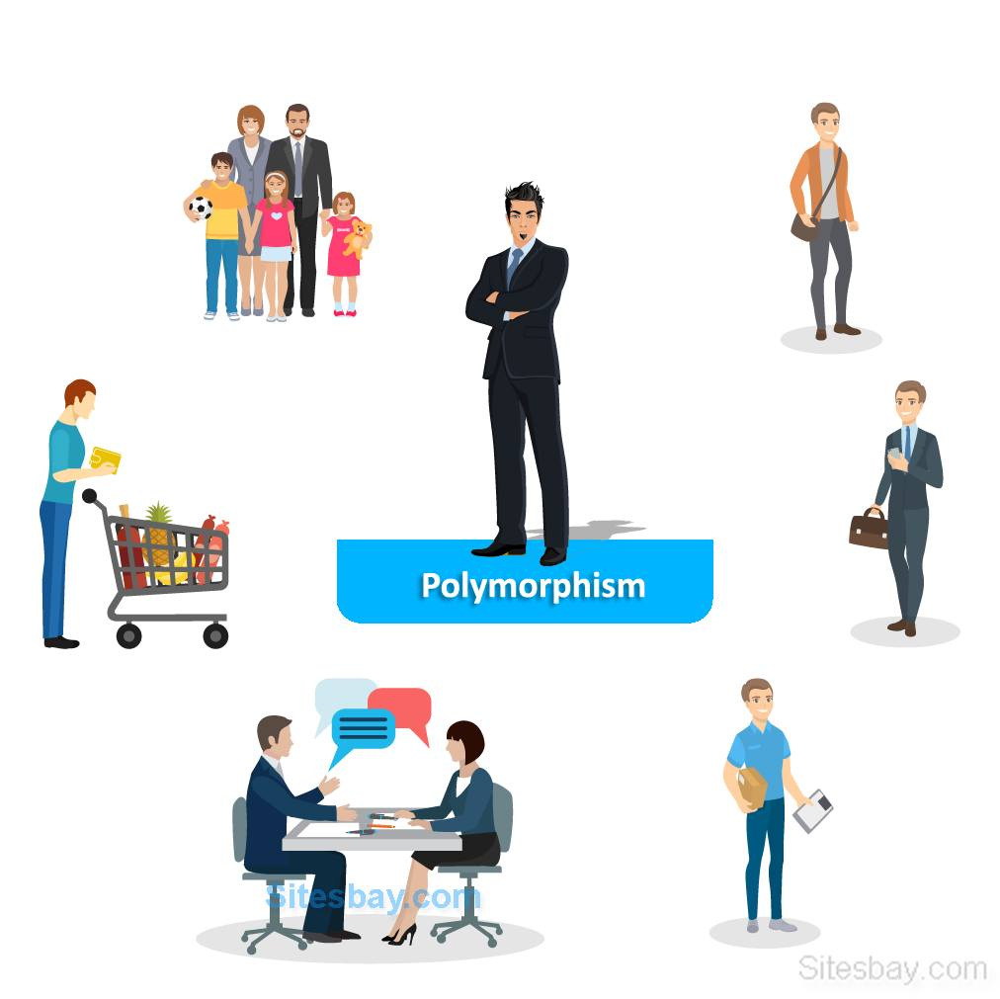
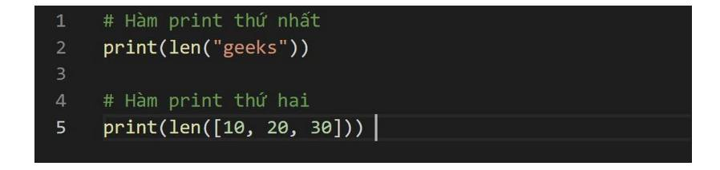
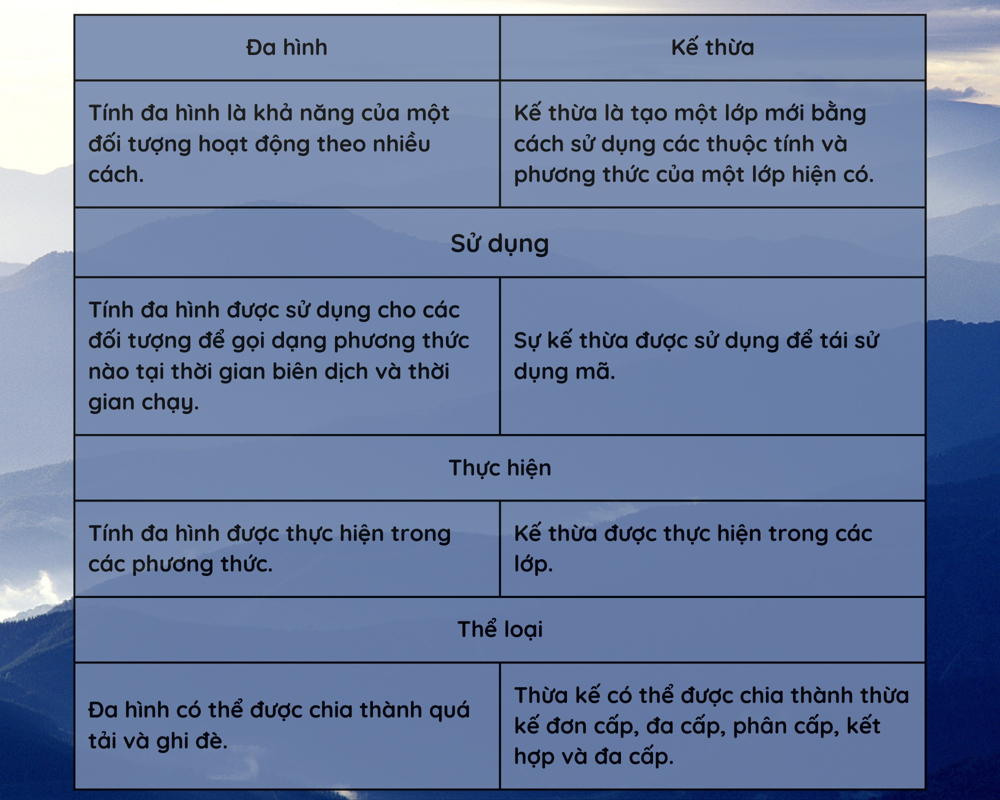
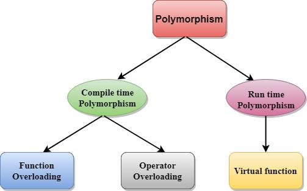
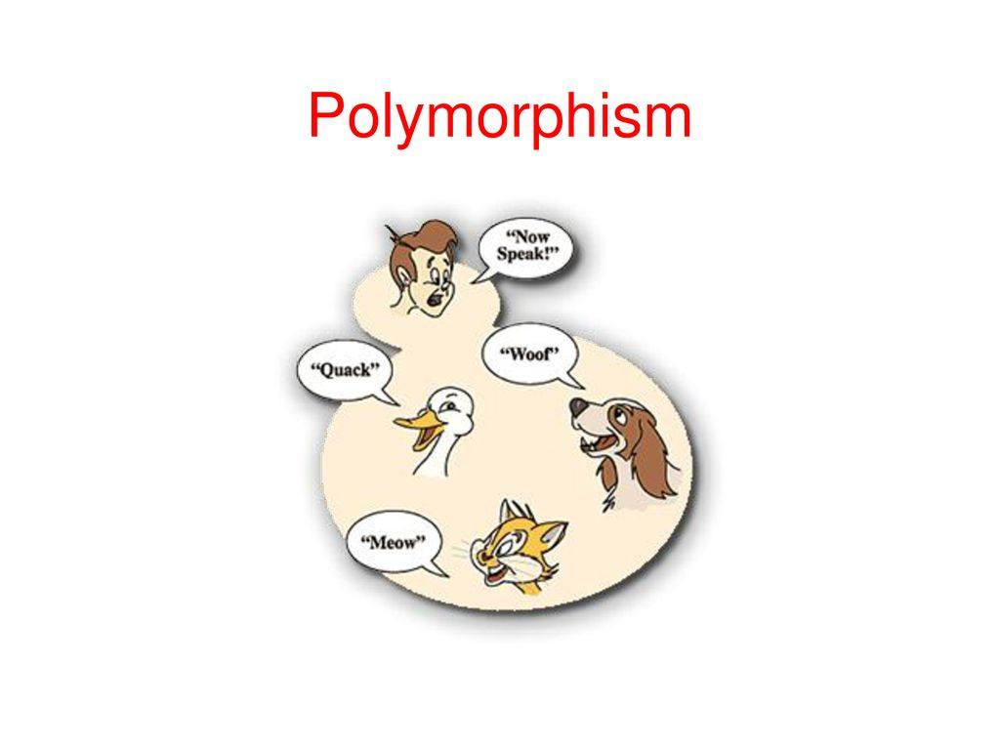

Polymorphism (Part 1)
❤️ Cảm ơn các bạn đã đi cùng Main Code qua 3 tính chất của OOP. Tính chất cuối cung chúng mình muốn giới thiệu với các bạn đó chính là Tính đa hình.
🎯 Do đây là 1 trong những tính chất mà nhiều lập trình viên chúng ta thường ít khi để ý đến và trong quá trình làm việc với OOP thì tính đa hình cũng ko được thể hiện rõ như 3 tính chất trước.
📖Vậy thì cùng chúng mình tìm hiểu nhé
Nguồn:
Tính đa hình trong OOP và những loại đa hình bạn cần biết (got-it.ai)
Tính Đa Hình Trong Lập Trình Hướng Đối Tượng (codelearn.io)
Sự khác biệt giữa tính đa hình và tính kế thừa trong OOP | So sánh sự khác biệt giữa các thuật ngữ tương tự - Công Nghệ - 2023
🚩 Tổng quan về Tính đa hình trong OOP
Khái niệm
🔍 Trong tiếng Hy Lạp, thuật ngữ “polymorphism” mang ý nghĩa là “có nhiều dạng”. Tương tự, trong lập trình thuật ngữ này dùng để ám chỉ đến việc một biến, một hàm hoặc một phương thức có thể tồn tại ở nhiều dạng khác nhau. Tức là nhiều hàm hoặc phương thức có thể cùng một tên nhưng chức năng thực sự của chúng lại khác nhau.
🚩 Để thể hiện được tính đa hình:
🎈 Các lớp phải có quan hệ kế thừa với cùng 1 lớp cha nào đó.
🎈 Phương thức đa hình phải được ghi đè (override) ở các lớp con (sẽ được trình bày ngay sau đây).
🚩Mục đích của Tính đa hình
Lập trình viên có thể tận dụng Tính đa hình trong OOP vào những trường hợp sau:
💥 Khi các lớp con cần dùng phương thức của lớp cha để bổ sung cho một phương thức khác.
💥 Khi một lớp cần có nhiều phương thức cùng tên nhưng khác tham số (parameter).
💥Tính đa hình trong đời sống
🚩Bạn hãy thử tưởng tượng nếu bạn yêu cầu những người sau thực hiện hành động “CẮT”:
🎯Bác sĩ phẫu thuật
🎯Nhà tạo mẫu tóc
🎯Diễn viên
Khi đó, chuyện gì sẽ xảy ra?
🎯 Bác sĩ phẫu thuật sẽ bắt đầu rạch dao mổ.
🎯Nhà tạo mẫu sẽ bắt đầu cắt tóc cho một ai đó.
🎯Nam diễn viên sẽ ngừng diễn cảnh hiện tại, chờ đạo diễn hướng dẫn
😎 Ví dụ trên cho thấy bản chất của Tính đa hình. Nó tượng trưng cho việc cùng một tên gọi nhưng hành vi thì khác nhau.
🚩 Sau đây là một ví dụ về Tính đa hình trong OOP được viết theo ngôn ngữ lập trình Python.
🔍 Từ đoạn mã trên, chúng ta thấy rằng trong chương trình có hai hàm cùng mang tên là “print”. Tuy nhiên, hai hàm lại có tham số khác nhau. Do đó, chức năng của hai hàm này cũng hoàn toàn khác nhau. Cụ thể:
🎯 Hàm print thứ nhất có tham số kiểu chuỗi (string). Vì vậy, mục đích của hàm này là để in một chuỗi ra màn hình.
🎯 Hàm print thứ hai có tham số kiểu danh sách (list). Vì vậy, mục đích của hàm này là để in một danh sách ra màn hình. Trong trường hợp trên là danh sách kiểu số nguyên (int).
🚩 Tóm lược
Tính đa hình và tính kế thừa là những khái niệm chính trong Lập trình hướng đối tượng. Sự khác biệt giữa Đa hình và Kế thừa trong OOP là Đa hình là một giao diện chung cho nhiều dạng và Kế thừa là tạo một lớp mới bằng cách sử dụng các thuộc tính và phương thức của một lớp hiện có. Cả hai khái niệm đều được sử dụng rộng rãi trong Phát triển phần mềm.
🚩 Tổng quan về Tính đa hình trong OOP
Khái niệm
🔍 Trong tiếng Hy Lạp, thuật ngữ “polymorphism” mang ý nghĩa là “có nhiều dạng”. Tương tự, trong lập trình thuật ngữ này dùng để ám chỉ đến việc một biến, một hàm hoặc một phương thức có thể tồn tại ở nhiều dạng khác nhau. Tức là nhiều hàm hoặc phương thức có thể cùng một tên nhưng chức năng thực sự của chúng lại khác nhau.
🚩 Để thể hiện được tính đa hình:
🎈 Các lớp phải có quan hệ kế thừa với cùng 1 lớp cha nào đó.
🎈 Phương thức đa hình phải được ghi đè (override) ở các lớp con (sẽ được trình bày ngay sau đây).
🚩Mục đích của Tính đa hình
Lập trình viên có thể tận dụng Tính đa hình trong OOP vào những trường hợp sau:
💥 Khi các lớp con cần dùng phương thức của lớp cha để bổ sung cho một phương thức khác.
💥 Khi một lớp cần có nhiều phương thức cùng tên nhưng khác tham số (parameter).